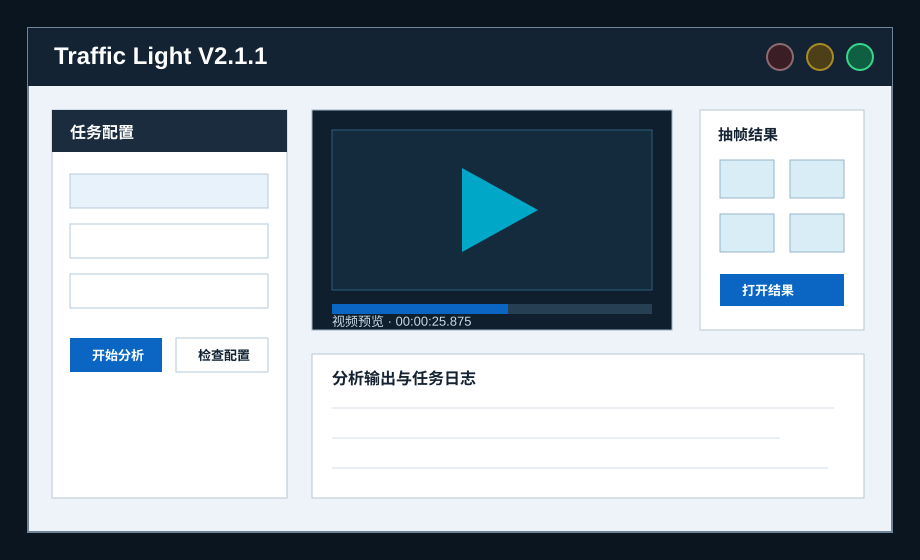
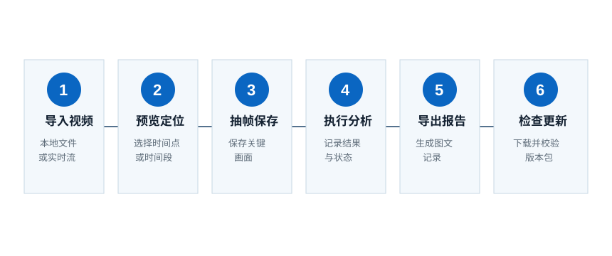
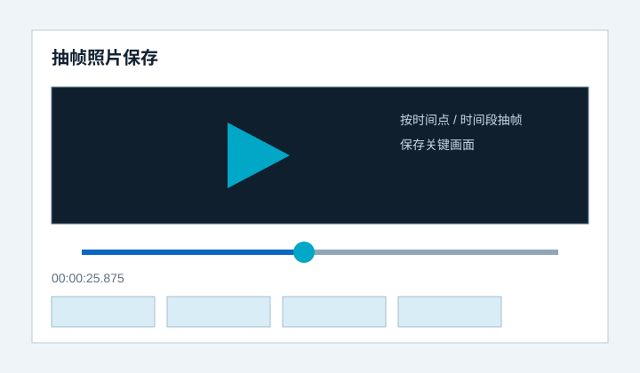
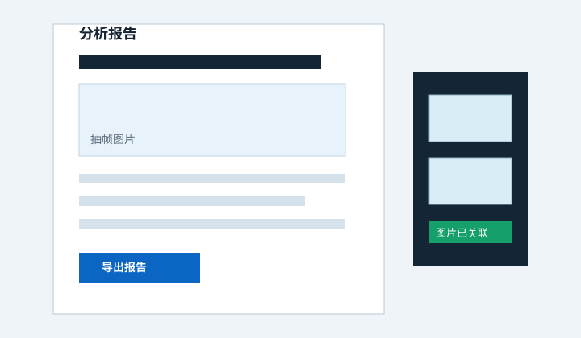
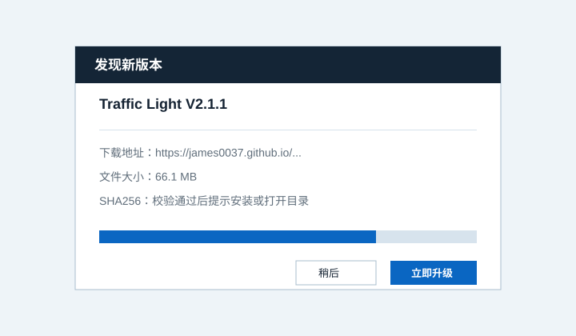

视频信息难整理
将视频源、抽帧规则、分析结果和任务状态放在同一个工作台，减少反复切换工具。
视频分析 · 抽帧记录 · 报告导出
视频分析、抽帧记录与报告导出的专业桌面工具
Traffic Light 面向工程现场、视频巡检和图像分析场景，帮助用户从视频资料中快速定位关键画面， 完成抽帧保存、结果记录和可追溯报告整理。

Product Positioning
Traffic Light 用于处理本地视频、实时视频流和抽帧图片资料。它把视频预览、关键帧保存、 分析任务管理、结果记录和报告导出放在同一工作流中，适合需要整理现场影像、复盘工程过程、 记录设备状态和归档分析结果的使用者。
Problems Solved
将视频源、抽帧规则、分析结果和任务状态放在同一个工作台，减少反复切换工具。
按时间点或时间段抽帧，保存关键画面，并保留与任务结果对应的文件路径。
分析结果按任务归档，报告中可自动插入抽帧图片，便于复核、移交和留档。
客户端可读取官网 update.json，下载升级包并执行 SHA256 校验，降低升级风险。
Core Capabilities
面向本地视频和实时流建立分析任务，记录输入源、状态、成功失败数量和结果路径。
在工作台中预览视频、查看时间位置，辅助选择抽帧时间点或时间段。
支持按固定间隔、指定时间点和指定时间段抽帧，关键画面保存到任务目录。
将每次分析的文本结果、视频时间、图片路径和任务状态写入可追溯记录。
导出包含抽帧图片和分析说明的图文报告，便于工程复盘和资料归档。
读取公网 update.json，展示版本说明、下载包大小和 SHA256 校验信息。
桌面端运行，配置、日志、结果和升级包保存在本机目录，便于现场使用。
提供压缩包发布方式，适合安装受限或需要临时测试的电脑环境。
Workflow
Traffic Light 将视频资料整理成可执行任务，用户可以先预览定位，再抽帧、分析、记录并导出报告。

Application Scenarios
整理巡检视频，保留关键设备画面和异常记录。
从运行视频中抽取关键时刻，用于状态复盘和问题定位。
把现场影像拆解成图片和文字记录，形成可交付资料。
保存视频证据、操作过程和分析结论，便于后续查阅。
处理交通、园区、厂区等场景下的连续视频资料。
对设备、区域和运行状态影像进行抽帧、记录与报告化。
Interface Preview



Release Notes
发布时间：2026-06-24。当前版本通过 GitHub Pages 发布端提供下载和自动更新检查。
Download
下载包包含当前稳定版程序。下载后按发布包说明运行或安装；软件内也可在 “参数设置 > 运行维护 > 软件更新”中检查新版本。
FAQ
请确认文件已完整下载，并根据发布包内说明运行。若系统拦截未知来源程序，需要在 Windows 安全提示中确认来源后再运行。
进入软件“参数设置 > 运行维护 > 软件更新”，使用默认官网地址检查更新即可。
抽帧图片和报告资产会保存在任务结果目录及同名资源目录中，便于与分析记录一并归档。
本地视频预览、抽帧、结果记录和本地报告整理可在无公网环境下使用；联网功能取决于模型服务和更新检查地址。
检查网络、下载地址和磁盘空间。软件会在下载失败或 SHA256 校验失败时提示错误，不会覆盖当前配置和结果。